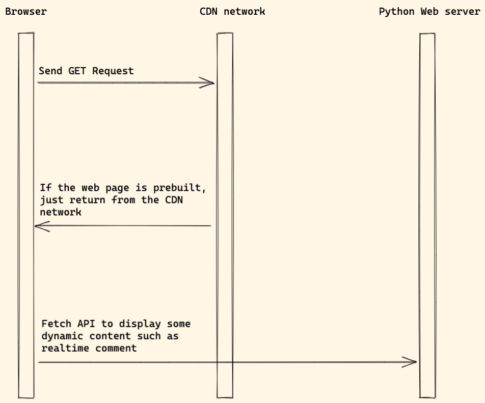

Jamstack
Jamstack, stands for Javascript, API and Markup (generated by a static site generator)
In the Server side rendering mode, we know we need to run a Node web server to render React or Vue component to HTML on the server side.
How about this way:
- In the
build stage, we try to render React or Vue component tostatic HTML(seems likestatic site generate) - During the
build stage, if needed, the Node.js app also send request to the API backend to fetch data. - And then, deploy the built HTML to the CDN network.
- The built app will use Javascript and API to talk to backend service, to enable dynamic content on some pages

Web app built with Jamstack is very fast (because of CDN, and the prebuilt HTML) and is very good option for many CMS application.
For example, many Wordpress applications now ues Jamstack since it is more fast and secure.
Frontend
It is recommended to deploy the frontend app to
Serverless Functions
If you do not understand what is Serverless Functions, you can learn
Backend
Django
For Django dev, we might also need below packages.
- Django REST framework which will help build REST API.
- dj-rest-auth or djoser for auth API support.
- django-cors-headers will help solve Cross-Origin Resource Sharing (CORS) issue.
- graphene-django Integrate GraphQL into your Django project.
Flask
For Flask dev, we might also need below packages.